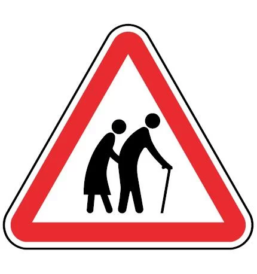
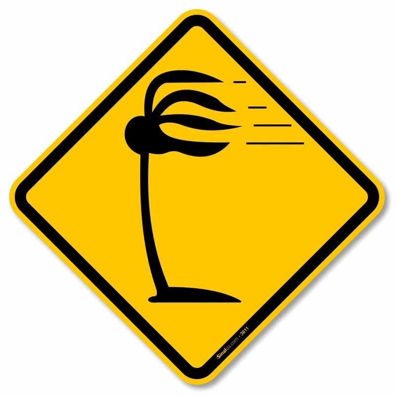
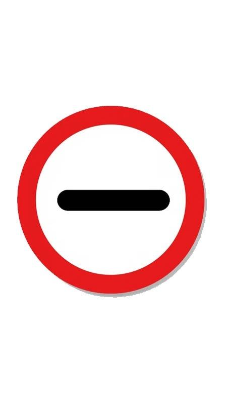

Autoexplicativa, indica a circulação de idosos pela área em questão

Rara de se ver, identifica a presença de ventos laterais, normalmente em cidades litorâneas ou estradas.

Parece ser um traço, mas identifica a presença de uma repartição alfandegária, a qual determina que todos os motoristas parem para inspeção